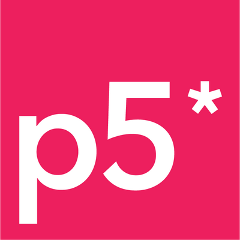
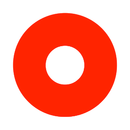

Prazer, meu nome é João Pedro B. Szlachta.
Sou formado em Ciência da Computação pela UniFil (Centro Universitário Filadélfia) e tenho uma especialização em Docência no Ensino Superior pela UniFil também.
Apesar de aprender sobre todas as áreas da computação (Lógica de Programação, Back-end, Front-end, IA, DevOps, Gerenciamento de Projeto, etc.) o meu interesse caiu quase que por completo no Front-end. Já usei diferentes tecnologias e ferramentas, buscando sempre trazer a melhor experiência para o usuário e por isso busco estudar também Design, UX/UI e áreas correlatas.
Desenvolvi um gosto por Creative Coding, principalmente, por ser uma área que podemos usar códigos de forma não-utilitarista, e fazer arte com lógica e matemática.
Tecnologias mais usadas
Desde o início dos meus estudos na área da tecnologia tive a oportunidade de trabalhar com várias tecnologias, plataformas e recursos. Dentre as que mais utilizei estão: HTML, CSS, JavaScript. Por conta do trabalho, tenho usado a plataforma de Low-Code Mendix. E para explorar o creative coding estudo o P5.js.

P5.jsOutras tecnologias
Recursos, linguagens ou programas que já usei e tenho uma certa noção.

Outsystems Figma
Figma
Projetos Pessoais
Segue abaixo alguns projetos meus feitos durante meus estudos. Dentre eles estão alguns projetos feitos através de curso e alguns que apenas sairam da minha cabeça.
Projetos Acadêmicos
Segue abaixo alguns projetos realizados durante o curso de graduação na UniFil.